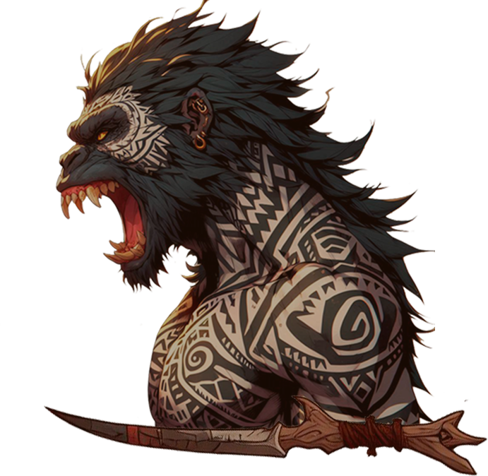

II
ARTEFATO DE INFRAESTRUTURA
CESAMA
Sistema inteligente de gestão hídrica e chamados operacionais com rastreio em tempo real.
“Onde a precisão da arquitetura de software encontra a estética atemporal das relíquias forjadas à mão.”
Mestre de forja digital especializado em criar interfaces imersivas, sistemas escaláveis e experiências interativas de alto impacto. Cada projeto é tratado como um artefato único — unindo performance impecável e direção de arte memorável.
Inspecione as cartas arcanas abaixo
Sistema inteligente de gestão hídrica e chamados operacionais com rastreio em tempo real.

Portal imersivo e universo de jogo de tabuleiro com lore viva, animações e regras interativas.

Um novo artefato está sendo forjado nas chamas. O selo será rompido em breve.
Otimização completa da gestão de chamados com rastreamento em tempo real, relatórios analíticos e fluxo de aprovação rigoroso.
Arquitetura moderna construída para alta disponibilidade, segurança de dados críticos e integração fluida entre equipes de campo.
Experiência de usuário clara e responsiva que reduz o tempo de atendimento e elimina ruídos operacionais no dia a dia.
Explore o universo místico de Tribos Ancestrais — um jogo de tabuleiro original onde estratégia, relíquias e sabedoria ancestral colidem. Descubra um portal digital forjado com animações cinematográficas e imersão profunda.
